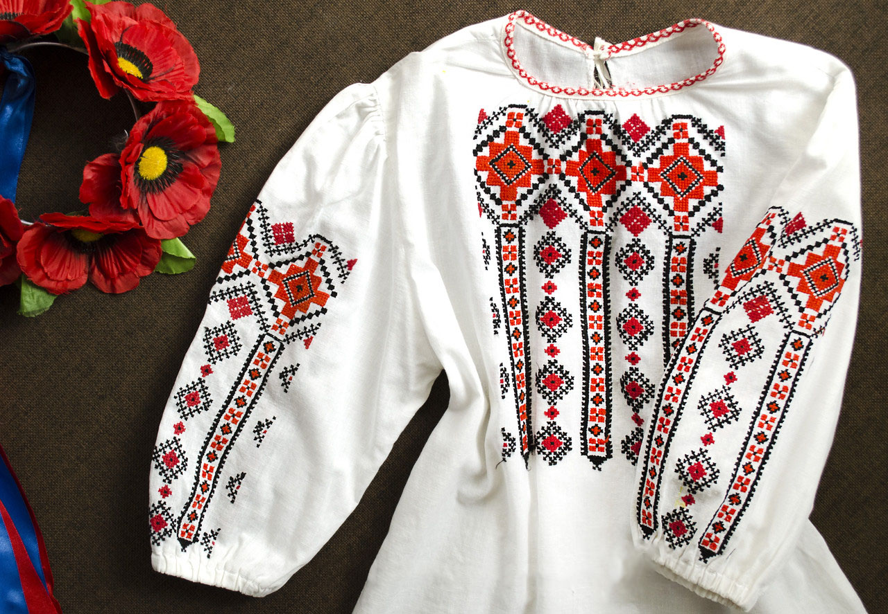

Призначення, зовнішній вигляд та створення
Історики та краєзнавці відзначають, що головним призначенням вишивки було прикрашання одягу та тканин, якими оздоблювали хати або використовували на святах та обрядах.

Для створення вишивки використовували різні узори та зображення тварин, птахів чи комах. Кожний візерунок, колір, матеріал та зображення мало своє сакральне значення. Наприклад, рушники з вишитими зображеннями голубів, півнів, коней, хрестиків тощо були своєрідними оберегами, що захищали людину від злих сил. В Україні налічувалось близько 100 видів і технічних прийомів вишивання (гладь, хрестик, низь, мереження, бігунець, плетіння тощо).
До процесу створення вишивки кожна господиня підходила дуже старанно. Перш ніж взятися за роботу, вона кілька днів дотримувалася посту та молилася, таким чином очищуючи своє тіло та розум. Починати працювати над вишивкою у плохому настрої або зі злими думками було категорично заборонено, вважалося, що тоді виріб принесе хазяїнові невдачу, хворобу.
Кольори української вишиванки загалом відомі в обмеженій кількості й гармонійних сполуках. Найбільше уживані чорна і червона барва, червоногаряча і жовта. Часами долучають також зелену й синю. Рідко вживаються срібна, золота і сіра нитки. Взагалі багатство барв збільшується з півночі на південь.
Крім того, вишивання, як національна традиція,сприяло формуванню у дівчат і жінок терпіння, відчуття краси. Дівчина мала вишивати милому сорочку, хустину, весільні рушники.